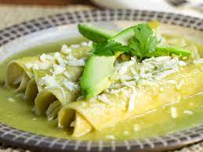

Enchiladas

Enchiladas Are All You Need to be Happy
Picture yourself in downtown Mexico City; you're in a restaurant on the ground floor of an old hacienda, with dark wood beams, colorful tiles on
the walls, and bright sunshine filtering in. The sound of traffic is a distant, but steady hum. You've spent the day touring the Zocalo and its imposing
cathedral; you've seen the ruins of the Aztec temple and stared down the throat of ancient gods; you shopped at a myriad of stalls full of handicrafts and
local goods. And now you're hungry. You want something that captures the essence of what you've seen and heard and smelled today: the sweet crunch of fresh
corn tortillas, the sharp bite of green tomatoes, jalapeños, and cilantro, the richness of a dollop of crema. What should you order? Enchiladas!
Ingredients
Enchiladas
- Chicken breasts
- Chicken broth
- Corn tortillas
- Monterrey Jack cheese
- Sour cream, for serving
Green Enchilada Sauce
- Chicken broth
- Tomatillos
- Diced green chilis
- Yellow onion
- Green onion
- Garlic
- Cilantro
- Lime juice
- Salt and pepper
Steps
- Cook chicken and broth in slow cooker for 5 hours until tender. Shred chicken and set aside.
- Combine the green enchilada sauce ingredients in a blender and blend until smooth.
- Transfer enchilada sauce to a saucepan and bring to a boil. Reduce heat and simmer for 20 minutes until enchilada sauce thickens.
- Warm tortillas on hot griddle and set aside until ready to use.
- Assemble the green chicken enchiladas by rolling shredded chicken, enchilada sauce, and cheese in the warm tortillas.
- Place enchiladas in pan and top with shredded cheese.
- Bake in 350 degree F oven for 14 to 16 minutes, or until cheese is bubbling.